Distributary
An artwork proposal for Debian 14 “forky”
One river, many forks
A single stream enters from the left, splits, and splits again into a delta.
Every junction is a fork. Debian is the river that much of the Linux world branches from, and for the
release named Forky, the theme celebrates exactly that.
DistributaryIn hydrology, a channel that forks away from a
river and flows on toward the sea, the opposite of a tributary. Ubuntu, Raspberry Pi OS, Kali, Tails and
hundreds more are built on Debian, and Mint on Ubuntu: a fork of a fork.
ForkEvery junction in the picture is a Y, and each split shares
the flow between its branches by a generalised Murray's law. There are forks everywhere, without drawing
cutlery or Forky, the Toy Story character.
AccentThe light sits on the first fork: the water is white
where the river splits, then rose, magenta and violet as the delta spreads. On an HDR screen the
fork is brighter than white.
GrownA small program grows the river by the rules of real
deltas, and faint contour lines turn the land between channels into islands.
Run it yourself.
Light at the first fork
Rose
Violet, as the delta spreads
seed 6source 1forks 93
channels 229widest : narrowest 11.4 : 1
Download
Take it home
Pick your screen size and get the wallpaper made for that shape, not cropped, in the colours,
accent and Dark or Light version shown at the top of the page.
Boot splash
The river grows while Debian boots
The Plymouth theme shows the Debian logo with the wallpaper's own river under it. As boot
progress advances, the water runs from the source and the river forks. It hurries through the stem, so the first
fork is already lit by mid-boot, even when Plymouth quits before reporting 100%.
A simulated boot with a disk passphrase, using the theme's real images and the script's own layout, crossfade and easing.
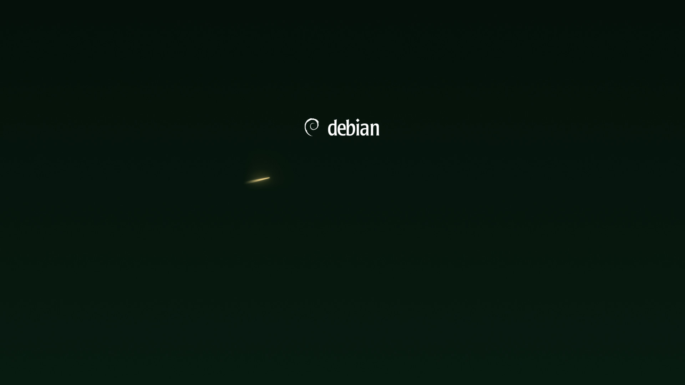
boot progress 0 %
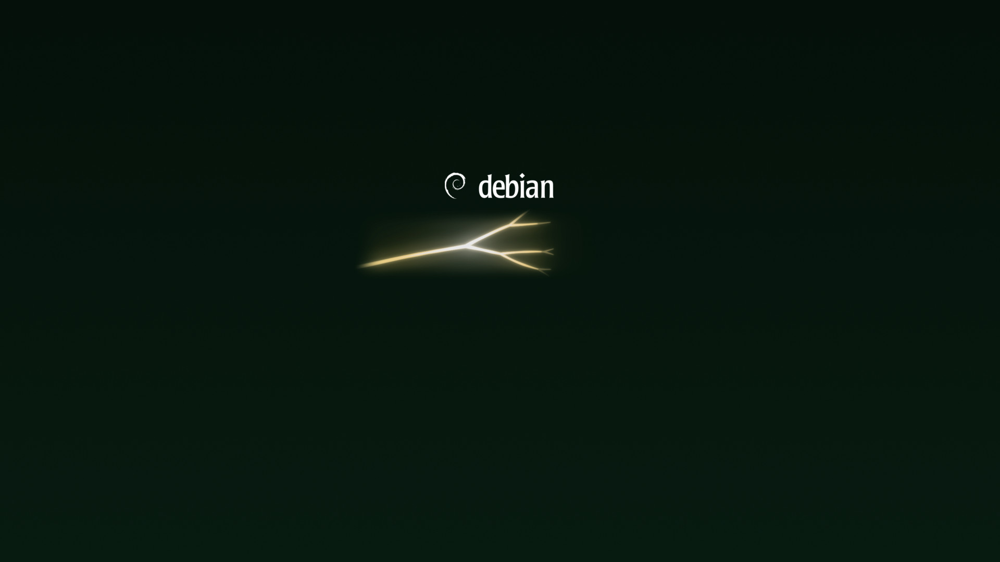
50 %
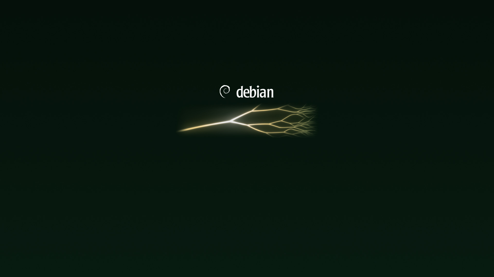
100 %
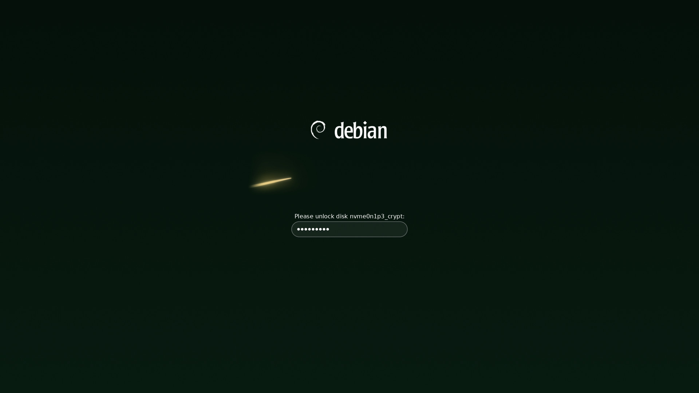
Encrypted disks. The prompt sits below the logo, where white text stays readable.
Messages, fsck progress and the prompt logic are adapted from the boot splash of Ceratopsian, Debian 13's theme. The theme is 1.5 MB.
In use
On the desktop, and before it
Mock-ups drawn by the program around the theme's real wallpapers, login screen, GRUB background
and installer banner.
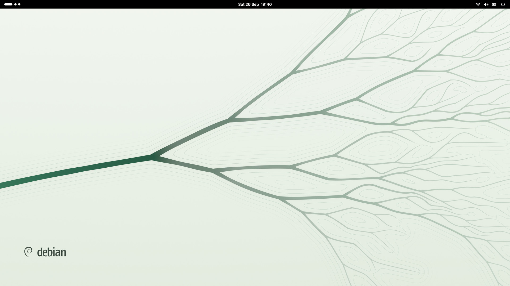
GNOME, light style. The light wallpaper, picked up through filename.
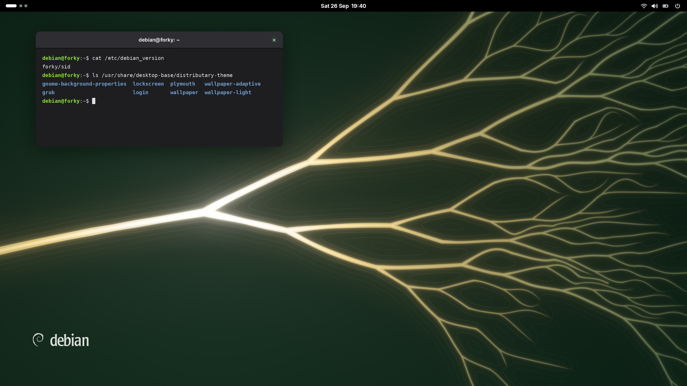
GNOME, dark style. The dark wallpaper, picked up through filename-dark. Windows sit in the calm part of the picture.
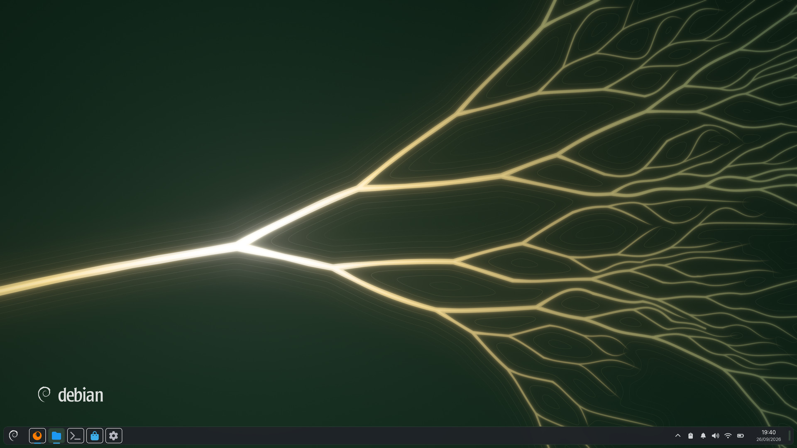
Plasma. One package with images and images_dark: light with Breeze, dark with Breeze Dark.
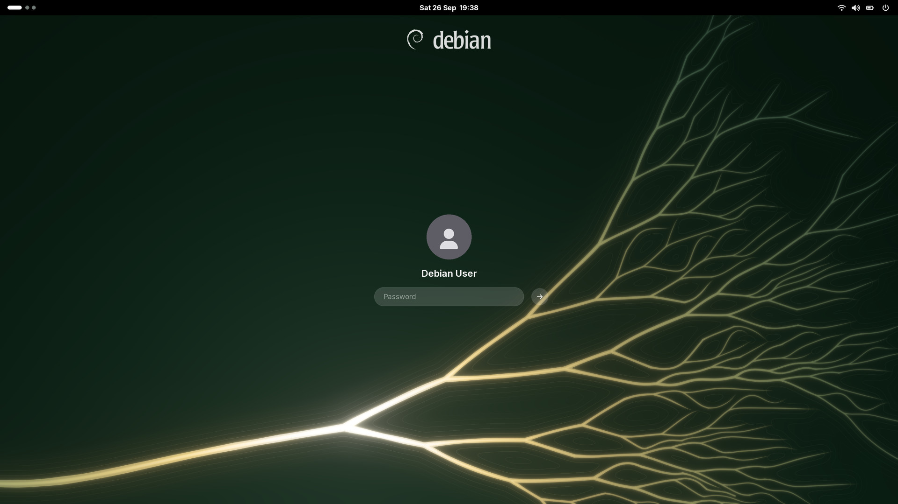
Login. The delta sinks below and to the right, so the login box sits on calm ground.
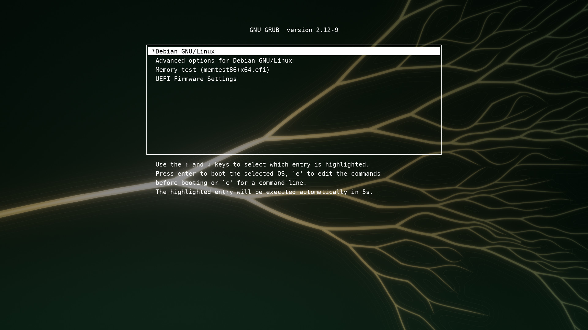
GRUB. Darkened toward the menu so the white text stays readable.
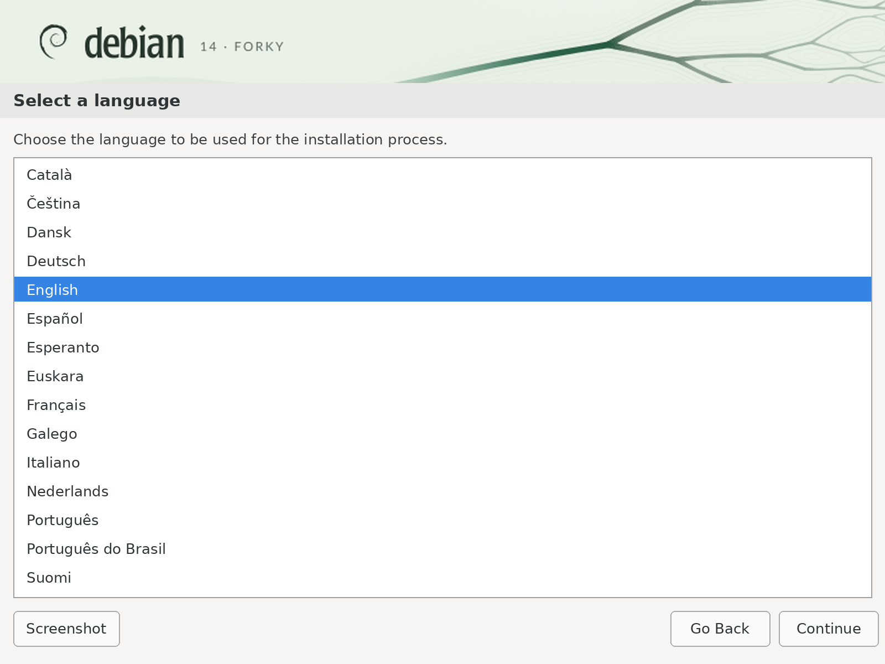
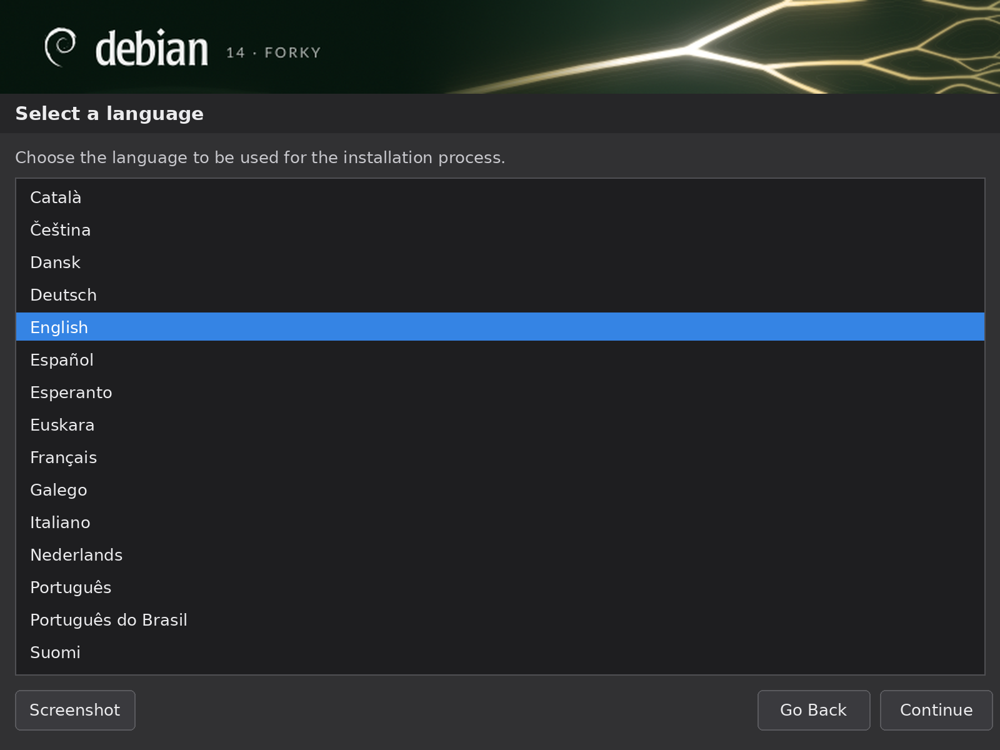
Installer. The 800×75 banner in light and dark, plus a 640×480 boot menu splash.
In motion
From the source to the desktop
The river can draw itself in the order the water would reach it, and the whole start-up, from
GRUB to the desktop, runs as one take.
Growth. The delta drawing itself from its source.
Power-on to desktop. GRUB and the login screen are simulated; in the real theme they are still pictures.
Resolution independent
Every screen, sharp at 8K
Each screen shape is its own window onto one river, not a crop. The first fork stays in view
even at 5:4, ultrawide gains a longer calm stem, and on phones the river flows down from the top.
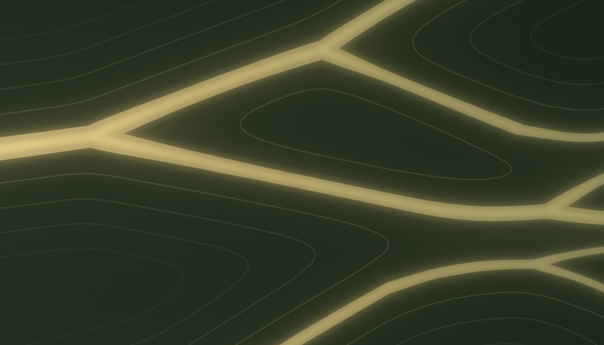
1:1 from the 8K render. Deep in the delta. Edges are vector; the light around them is soft.
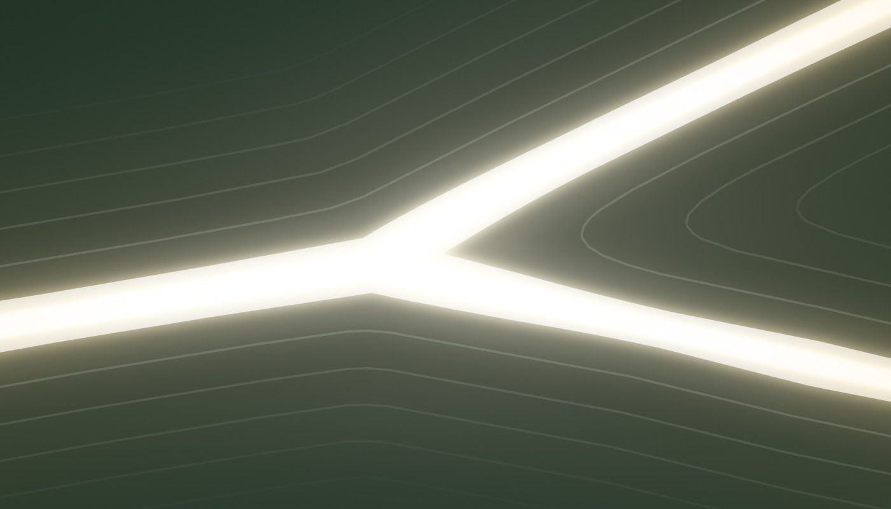
The first fork. Widths follow a generalised Murray's law (exponent 2.4), so flow is conserved across every split.
High dynamic range
Brighter than white, only at the fork
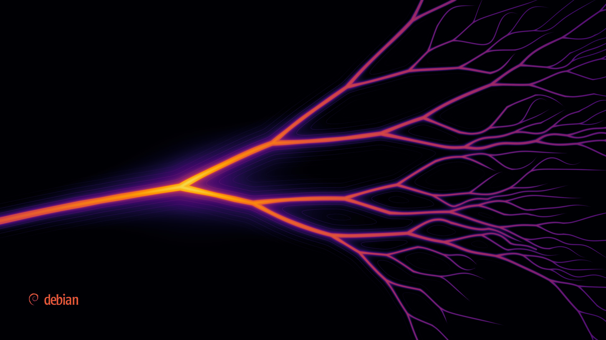
6251002034001000 nits
Luminance of the dark wallpaper in HDR. The picture lives far below SDR white; only the water around the first fork uses the headroom.
The scene is rendered in linear light. SDR gets a tone curve that leaves everything below its knee
untouched; HDR is the same picture plus exactly the light the curve removed, mastered for 1000 nits
with SDR white at 203 nits (BT.2408).
- peak (MaxCLL)
- 621 nits
- frame average
- 8 nits
- median pixel
- 3 nits
- above SDR white
- 0.4 %
- above 400 nits
- 0.11 %
- gain map headroom
- 1.61 stops
Formats: .gainmap.avif (an SDR AVIF with an ISO 21496-1
gain map; the dark picture at the top of this page is one), PQ AVIF and JPEG XL, a 16-bit PNG with
cICP, and a scene-linear OpenEXR. On an HDR display, in
a browser that supports gain maps, the fork glows; elsewhere you see the SDR picture.
Free software
Made by a program, free as Debian
Nothing here was drawn by hand, painted, photographed or made by an image-generating model. Every
wallpaper, login screen, boot splash frame, GRUB background, installer banner, HDR master and video on this
page comes out of one Python program, and you can run it yourself.
SourceThe program is the artwork's source: its preferred form for
modification, as the DFSG asks. Change a palette or the river's seed in design.py and every file
follows. The pictures are build products, like binaries.
DFSG-freeGPL-2.0-or-later or CC-BY-SA-4.0, at your choice; the
GPL is what desktop-base, Ceratopsian included, already uses. The Debian logo is LGPL-3.0-or-later or
CC-BY-SA-3.0, and the “14 · FORKY” letters are Lato outlines (SIL OFL 1.1). All of it fits Debian main.
From DebianEvery tool and library it needs is packaged in Debian,
and nothing is downloaded at build time.
ReproducibleThe river grows from a fixed seed, so two builds give
byte-identical files. make check also renders the SVGs in four renderers and compares them.
Fork your own wallpaper
In your browser, the palette editor recolours the river
live or randomizes a variation of your own, and gives you the wallpaper as a PNG and the palette as JSON. To
build the whole theme, clone the program and change design.py, or hand it that JSON.
salsa.debian.org/samueloph/distributary
· github.com/samueloph/distributary
sudo apt install python3-numpy python3-scipy python3-cairo python3-gi gir1.2-rsvg-2.0 \
python3-pil python3-contourpy python3-fonttools fonts-lato
git clone https://salsa.debian.org/samueloph/distributary.git
# or: git clone https://github.com/samueloph/distributary.git
cd distributary
./build.py svg # Forest, the default, as SVGs, in under a minute
SIZES=1920x1080 ./build.py raster # and PNGs, dark and light, at your screen's size
That builds Forest's wallpaper into build/.
--scheme builds another colour (violet, midnight, red,
teal, glacier, lineage or silt; add -even, as in
forest-even, for any colour but Lineage without the accent on the fork), and
--palette my-colours.json builds the editor's JSON. For the whole theme, use --draft all
(up to 4K, 10–15 minutes) or all (up to 8K) instead of svg, and video for the
animations (about a quarter of an hour, with ffmpeg); the HDR files also need libavif-bin,
libjxl-tools and python3-openimageio. The theme is laid out like desktop-base.
Colours
One river, eight colours
Every colour comes dark and light, and all but Lineage with or without the accent on the fork;
each is a complete theme. Pick one here, or in the Colours bar at the top, and the whole page switches to it.
Without the accent on the fork, the water keeps one colour from the source
to the first forks, and nothing is brighter than white. Colours that follow the river, like Lineage's red, are
measured along the water from its source, so they land on the same channels on every screen shape.
Or fork your own wallpaper in the palette editor: start
from any colour here, change anything, or randomize.